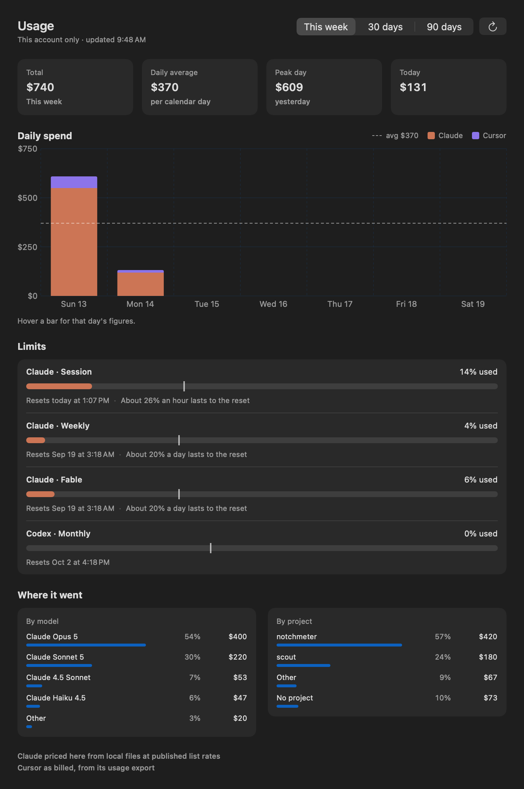

When does the Claude Code rate limit reset?
Claude Code's session limit is a 5-hour window and its weekly limit a 7-day window, and every reading Anthropic returns carries the moment each one resets. Notchmeter shows that moment beside the notch as a countdown or an exact time, tells you whether you will run out before it, and notifies you when the window comes back. It shows Anthropic's reset, never one it computed itself.
macOS 15 or later · Apple silicon or Intel · no account, ever
The windows, and when each one resets
Anthropic meters Claude Code in windows, and each window in a reading carries its own reset moment. Notchmeter shows the moment; it does not compute one.
- Session: the 5-hour window (
five_hour.resets_at). The Cost card's session block is aligned to the same moment, so the meter and the spend describe one period. - Weekly: the 7-day window (
seven_day.resets_at). - Per-model weekly limits (Opus, Sonnet, Fable…), each carrying its own reset, shown on its own meter.
- The display: Resets in 3h 40m or Resets today at 10:50 PM, your choice under Settings › Appearance › Reset times, in your own time zone and time format.
- Not a fixed instant: across reads, one window's reset was seen to wander inside a two-second band while its figure never moved, the signature of a moment recomputed from a remaining duration. So two resets within ten minutes of each other are read as the same period, and a countdown never restarts on a wobble.
- Peak hours: tighter session limits on weekdays between 05:00 and 11:00 Pacific were reported, not documented (The Register, 2026-03-26, from Anthropic's announcement; Anthropic's support article does not publish the hours), so they are a preference under Settings › Advanced, on for Claude only, and never a constant the meter vouches for.

Will you make it to the reset?
A percentage tells you where you are. These say whether you get there.
| Figure | How it is built | Where it shows |
|---|---|---|
| Pace tick | Where an even burn would be right now: the elapsed share of the window, from the reset and the window's length | A tick on every meter, and the calm rule for the rings: small and dim while every window is under 40% and on pace |
| Projection | The used share extrapolated at an even burn to the reset, or the time the window runs out if that comes first | “~67% left at reset” or “Runs out in 2h” on the meter; “About 26% an hour lasts to the reset” in the dashboard |
| Run-out interval | The 20th and 80th percentiles of your own hourly rates over the last seven days, from the drain log; needs four rates, and keeps peak and off-peak hours apart when it has enough of each | “Runs out 2:10 PM–4:40 PM” on the card and the same times in the advice; a single time when the edges are within fifteen minutes |
| The drain | An append-only log of every successful read per window: time, window, used fraction, reset. Seven days, never a token | “12% → 61% in the last hour” under a meter that moved, and a 24-hour sparkline on the card |
Notifications fire at pace crossings, not percentage crossings, because a percentage alert arrives when it is too late to change anything: one when the pace first reaches on track, one when it first reaches behind, and one when the run-out time first comes within an hour. None of the three is sent in the first tenth of a window, when the projection is noise. Limit hit is a measurement rather than a projection, so it is reported the moment it is seen. Each has its own toggle, and the quiet hours hush rather than drop them. The rules: The run-out interval and The drain log.
Told when it comes back. When a window resets fires once when a window that was at least 80% used or behind pace passes its reset (“Claude session reset — 100% until it resets today at 3:40 PM”), and an optional reminder fires 10 minutes or an hour before such a reset. Both run on a timer rather than on a reading, so they arrive on time whether or not the endpoint has been asked since.
What it says while you wait
The Advice strip's lines about resets, each worded as an instruction.
Questions
How long is the Claude Code session limit, and when does it reset?
The session limit is a 5-hour window and the weekly limit a 7-day window; a plan may add per-model weekly limits. Each reading Anthropic returns carries the moment each window resets, and Notchmeter shows that moment as “Resets in 3h 19m” or “Resets today at 1:07 PM” (Settings › Appearance › Reset times). It shows Anthropic's figure; it does not compute a reset from a schedule of its own.
Does the session window reset on a fixed schedule?
Notchmeter does not claim to know. What it has seen is that the reset moment is recomputed on every read and wanders by a second or two while the figure stays still, so it treats two resets within ten minutes as the same period. What Anthropic's metering does beyond what it reports is not guessed at.
Can it tell me whether I will run out before the reset?
Yes. Every meter has a pace tick and a projection, and once the drain log holds four hourly rates it shows a run-out range measured from your own last seven days rather than an even-burn guess. The notifications fire when the pace crosses, and again when the run-out time comes within an hour.
Will it notify me when the limit resets?
Yes. When a window resets fires once for a window that was at least 80% used or behind pace, naming the window and the next reset, and a reminder can fire 10 minutes or an hour before. Both run on a timer, both have their own toggle under Settings › Notifications, and the quiet hours hush them for the morning rather than dropping them.
What does /limit-reset do?
Users report that it clears the 5-hour session window and not the weekly cap. That is community-sourced and not in Anthropic's documentation as of 2026-09-20, so Notchmeter only mentions it, as a quieter advice line when the session was the window that was hit and the week still has 40% left. It never runs the command.
Are Claude's peak hours real, and does Notchmeter model them?
Tighter session limits on weekdays between 05:00 and 11:00 Pacific were reported by The Register on 2026-03-26 from Anthropic's announcement; Anthropic's support article on usage limits does not publish the hours. So they are a preference (Settings › Advanced › Peak hours, on for Claude only, editable) and not a constant the meter vouches for. Inside the window the projection assumes the peak rate your own drain log observed, and the advice names the next off-peak start for a long job.
Install it
macOS 15 Sequoia or later, Apple silicon or Intel. Signed, notarised, and it updates itself. Free forever, MIT licensed.
Notchmeter is a Mac app. There is no Windows or Linux version; if you want a Windows one, the Windows issue is where to say so. How every figure is built, with its source and its date: docs/accuracy.md.